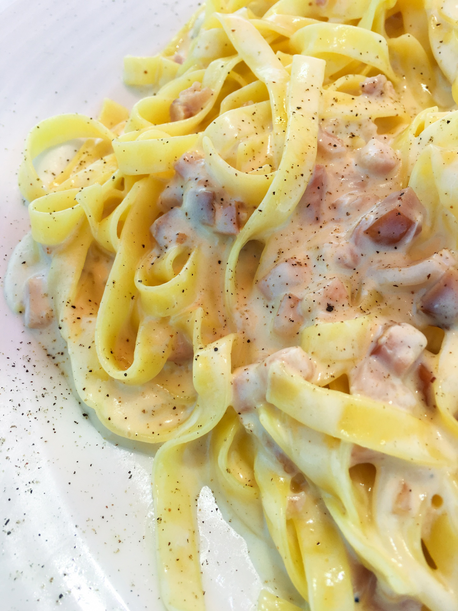

Creamy Pasta Sauce

Description
I made a rich, velvety pasta dish that uses things you can find in your pantry. This recipe came out as a thick restaurant quality sauce without needing expensive heavy cream, fancy cheeses, or anything like that. By using a basic roux made from butter, flour, and milk, stretching it further with free starchy pasta water, you get a satisfying, ultra budget friendly meal straight from your cupboard. Please give it a try and tell me your feedback!
Ingredients
- 1 onion (diced)
- 2 garlic cloves (minced)
- 1 tomato (diced)
- 2 tbsp butter
- 2 tbsp oil
- 2 tbsp all-purpose flour
- 350mL milk
- 1 cup reserved pasta water
- 1 stock cube (crushed)
- salt
- black pepper
- Aromat (to taste)
Instructions
- Bring a pot of salted water to a boil and cook your pasta according to package instructions. Before draining, reserve 1 cup of the starchy pasta water for the sauce. Set the cooked pasta aside.
- Melt 2 tbsp of butter in a pan over medium heat. Add the diced onion and fry until soft and translucent.
- Stir in the diced tomato and minced garlic. Cook until the tomato breaks down and melts into the onions, and the garlic becomes fragrant.
- Turn off the heat briefly. Pour in 2 tbsp of oil and sprinkle 2 tbsp of flour evenly over the vegetables. Stir well, it will form a thick paste. Turn the heat back to low and cook for about 1 minute while stirring constantly to remove the raw flour taste and prevent burning.
- Keep the heat low and gradually pour in the 350 ml of milk, stirring continuously as it warms and thickens. Gradually pour in your reserved pasta water (up to 1 cup) to smooth out the sauce and build flavour.
- Crumble the stock cube directly into the pan. Bring the sauce to a simmer, stirring frequently until it reaches your desired thickness. Season with salt, pepper, and Aromat to taste.
- Combine & Serve Toss your cooked pasta directly into the thick, creamy sauce until every piece is well coated. Serve hot!
Home